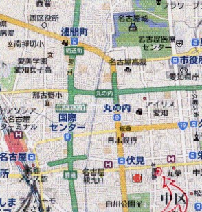
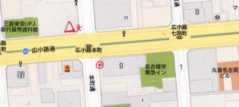
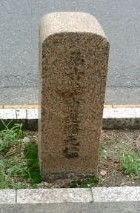
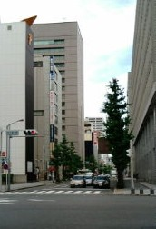
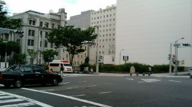
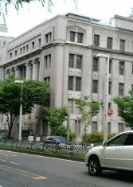

昨日（7/11（土））の早朝、所用があって久しぶりに名古屋へでかけた。早起きしてわざわざ名古屋まで出かけたにもかかわらず、所用は一分で終了....すごすごと帰宅の途についたとき、ふと（アレはどうなっているのかな）と思いつき、アソコへ回り道した。そのアソコとはココ（↓のとこ）
写真Ａ 赤の二重丸のところ。
ココはどこかと云えば、南北は御幸本町（みゆきほんまち）線、東西は広小路（ひろこうじ）線の交差点。
写真B
なんでココかと云えば、ココに「名古屋市道路元標」があるから。「道路元標」というのは大正８年、旧道路法によって定められた道路の起点標識。ほら、「○○まで何キロ」ってやつ。大げさに云うなら、尾張名古屋のヘソ。久しぶりにそれが見たかった。

見えにくいが「名古屋市道路元標」と彫ってある。
地価公示価格などで名古屋でもっとも格の高い場所とされるのが、矢印の場所から５百メートルほど東の栄（さかえ）の交差点（写真Ａで「丸栄」と記されているとこの右側、南北の広い道筋）。なのに どうして赤丸の場所に名古屋市の道路元標が設置されたかと云えば、昭和20年以前はその場所の方が格が高かったから。
写真Ａで分かる通り、赤丸の場所から御幸本町線をまっすぐ北へ行くと名古屋城の正門にぶつかる。要するに江戸時代は、名古屋を南北に走るメインストリート。
写真Ｃ
写真Ｃが問題の交差点から北を見た光景。いまじゃ、まったく お城は見えないが、昭和30年頃までは、この場所から名古屋城の石垣が見えた。写真の右側（交差点の北東角にあたる）に写っているのは、三菱東京UFJ銀行名古屋支店のビル壁（旧東海銀行本店）。
＃それにしても三菱東京UFJ銀行とは長たらしい。ユーザーの迷惑も考えないで、縄張り争いみたいな名前はやめてくりょ。各銀行の頭文字をとってMTU銀行、あるいはカタカナでグランド銀行ぐらいにしてくれ。
そして東西に走る広小路は、東京でいえば銀座に相当する。そんな格が高い通りの交差点なので、ここが道路元標の設置場所となった。そんな場所なので、この通りには銀行や生保会社の重々しいビルが建てられていた。
写真Ｄは交差点の北西角。以前はやまと生命の古いビルがあった。それが米軍に接収されて、ＧＨＱの名古屋本部になっていた。たしか昭和30年頃まで、いつも米軍のMP（憲兵）がビルの前に立哨していた（写真Ｂの赤三角の場所）。
写真Ｄ
そんなビルも今は取り壊されてしまったが、その西となりには、まだ古いビルが残っている（今はグランド銀行(笑)の、貨幣資料館）。
写真Ｅ
この道路元標方式は、昭和２７年、新道路法によって廃止となった（たしか新道路法では市役所の前が起点）。それでも昭和50年くらいまで そのまま残っていたが、御幸本町の拡幅工事かなんかで撤去されてしまった。そこで元あった場所の近くに復元した。
道路元標のあった場所（交差点の南東角）は名古屋で最初の郵便局が作られた場所でもある。そこで昔は元標の横に「名古屋逓信発祥之地」という碑もあった。しかし その碑は撤去されたままで、復元されていなかった。
逓信発祥の碑にしても道路元標にしても、高さ数十センチの ただの石柱。しかしそれを棄すてたりするのは、歴史を棄てるというのと同じ。もっと日本の歴史を大切にせい （｀-´）
|